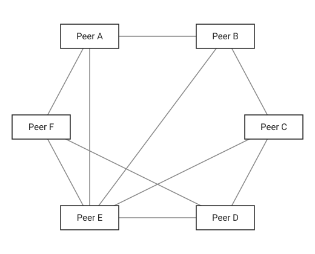

A peer-to-peer (P2P) architecture consists of a decentralized network of peers: nodes that are both clients and servers. P2P networks distribute the workload between peers, and all peers contribute and consume resources within the network without the need for a centralized server.

In a client-server system, clients only request and a server only responds. In a P2P system every node, called a peer (or sometimes a "servent", from server plus client), does both: it requests data from other peers and serves its own data to them. Each new peer brings its own bandwidth, storage and CPU, so the capacity of the network grows with the number of users instead of being limited by one server.
Decentralization
There is no single node that controls the network or that every request must pass through. Control, data and work are spread over all peers.
Peers Are Both Clients and Servers
Every peer can start requests and answer them. A peer downloading a file in BitTorrent is at the same time uploading the pieces it already has to other peers.
Shared Resources
Peers contribute resources to the network: storage (IPFS), bandwidth (BitTorrent), computing power (BOINC volunteer computing) or validation work (Bitcoin miners and nodes).
Self-Organization
Peers discover each other, join and leave, and route requests without central coordination. The network keeps working while its membership constantly changes.
Churn
Peers come and go all the time, often without warning, when users close an application or lose their connection. This constant change of membership is called churn, and every P2P design has to tolerate it.
Scalability
Every new peer is both a consumer and a provider, so demand and capacity grow together. A popular file in BitTorrent becomes easier to download, not harder, because more peers can serve it.
Fault Tolerance
Data and services are replicated on many peers, so the failure of any single peer, or even many peers, does not take the network down. There is no single point of failure.
| Aspect | Client-server | Peer-to-peer |
|---|---|---|
| Roles | Fixed: clients request, servers respond | Every peer is both client and server |
| Control | Central, by the server owner | Distributed among peers |
| Single point of failure | Yes, unless the server is replicated | No |
| Scalability | The server must grow with the number of clients | Capacity grows as peers join |
| Cost | The provider pays for servers and bandwidth | Costs are shared by the peers |
| Data consistency | Easy: one authoritative copy | Hard: many copies, no central authority |
| Security and trust | Managed centrally | Each peer must be treated as untrusted |
| Discovery | Clients know the server address | Peers must find each other dynamically |
| Examples | Web applications, REST APIs, email servers | BitTorrent, Bitcoin, IPFS, WebRTC calls |
1. Unstructured P2P
Peers connect to each other randomly, with no rule about which peer stores which data. To find something, a peer floods the query to its neighbors, which forward it to theirs up to a hop limit (TTL), or sends it on a random walk.
2. Structured P2P (Distributed Hash Tables)
Peers and data keys share one ID space, and a fixed rule decides which peer is responsible for each key. A distributed hash table (DHT) can route a lookup to the responsible peer in about O(log N) hops, where N is the number of peers.
3. Hybrid P2P
Some functions are centralized, usually discovery or indexing, while the actual data transfer happens directly between peers.
| Type | Lookup | Search features | Resilience | Examples |
|---|---|---|---|---|
| Unstructured | Flooding or random walk | Keyword and complex queries | High | Gnutella |
| Structured (DHT) | O(log N) routing | Exact key only | High, with routing upkeep | Kademlia, Chord |
| Hybrid | Ask the central index or tracker | Whatever the index supports | The index is a weak point | Napster, BitTorrent with trackers |
1. Bootstrapping
A new peer needs the address of at least one peer already in the network. Common sources are hard-coded bootstrap nodes, DNS seeds (used by Bitcoin), trackers, a local network broadcast, or addresses remembered from a previous session.
2. Peer Discovery
Once connected, a peer learns about more peers from its neighbors, for example through DHT lookups or by asking for their peer lists. It keeps a limited set of connections and replaces peers that disappear.
3. Resource Lookup
The peer finds who has the data it needs: by flooding a query, by asking a DHT for the key, or by asking a tracker or index.
4. Direct Transfer
The data moves directly between peers. Large content is split into pieces that can be downloaded from many peers at once and verified independently with a cryptographic hash.
5. Leaving
A peer may leave gracefully or simply disappear. Replication, timeouts and periodic refreshes of routing tables keep the network healthy anyway.
A DHT works like a giant Map<Key, Value> spread over all peers. Both peers and keys get IDs from the same hash function, for example 160-bit SHA-1 in Kademlia. A key is stored on the peers whose IDs are closest to the key.
Kademlia defines the distance between two IDs as their bitwise XOR, interpreted as an integer. XOR distance has useful properties: the distance from a node to itself is 0, it is symmetric, and for any ID and distance there is exactly one ID at that distance.
Consistent hashing in systems such as Cassandra and DynamoDB uses the same idea as a DHT: both nodes and keys are placed on a hash ring, and each key belongs to the nearest node. See Sharding.
Most peers sit behind home routers or carrier-grade NAT, so they cannot accept incoming connections directly. P2P applications use several techniques to connect such peers; see NAT for how NAT works.
In a gossip (epidemic) protocol, each peer periodically passes what it knows to a few random peers, which pass it on in turn. Information reaches all N peers in about O(log N) rounds, without any central coordinator, and the protocol keeps working when many peers fail.
The chat example below uses the simplest form of gossip: flooding with duplicate suppression. Every message has a unique ID, and each peer forwards a message only the first time it sees that ID.
| System | How it uses P2P |
|---|---|
| BitTorrent | Files are split into pieces; peers download pieces from each other and upload the pieces they have. Peers are found through trackers, the Mainline DHT (Kademlia) and peer exchange. |
| Bitcoin, Ethereum | Every full node keeps a copy of the blockchain, validates transactions and gossips them to its peers. Consensus replaces a central authority. |
| IPFS | Content is addressed by its hash (a CID) instead of a location. A Kademlia DHT finds which peers provide a CID, and the libp2p library handles transport, encryption and NAT traversal. |
| WebRTC | Browsers send audio, video and data directly to each other. A signaling server only exchanges the connection details; ICE, STUN and TURN handle NAT. |
| Skype (before about 2012) | Used a P2P overlay with super-nodes; Microsoft later moved it to central servers. |
| Spotify (before 2014) | Desktop clients served cached music to each other to reduce server load. |
| Cassandra, DynamoDB-style stores | Leaderless clusters where every node is equal; nodes gossip membership and keys are placed by consistent hashing. |
| Git | Every clone is a complete repository, and any two repositories can push and pull to each other directly. |
BitTorrent is the most widely used P2P file-sharing protocol and shows many P2P techniques together.
.torrent file or a magnet link describes the content: file names, piece size and a hash of every piece. The info hash identifies the torrent.Each PeerNode is both a server, accepting connections on its own port, and a client, connecting to other peers. Messages are flooded through the network with duplicate suppression, so a message reaches peers that are not directly connected to the sender. The example uses plain sockets and virtual threads (Java 21+).
public class PeerNode {
private String id;
private int port;
private Set<String> seen = ConcurrentHashMap.newKeySet();
private List<PrintWriter> peers = new CopyOnWriteArrayList<>();
public PeerNode(String id, int port) {
this.id = id;
this.port = port;
}
public void start() throws IOException {
ServerSocket server = new ServerSocket(port); # Server role: accept connections from other peers
Thread.ofVirtual().start(() -> {
while (!server.isClosed()) {
try {
handle(server.accept());
} catch (IOException e) {
IO.println(id + ": accept failed: " + e.getMessage());
}
}
});
}
public void connect(String host, int peerPort) throws IOException {
handle(new Socket(host, peerPort)); # Client role: connect to another peer
}
public void broadcast(String text) {
String messageId = id + "-" + UUID.randomUUID();
seen.add(messageId);
send("MSG " + messageId + " " + id + " " + text, null);
}
private void handle(Socket socket) throws IOException {
PrintWriter out = new PrintWriter(socket.getOutputStream(), true);
peers.add(out);
Thread.ofVirtual().start(() -> { # One cheap virtual thread per connection
try (var in = new BufferedReader(new InputStreamReader(socket.getInputStream()))) {
String line;
while ((line = in.readLine()) != null) onMessage(line, out);
} catch (IOException e) {
IO.println(id + ": peer disconnected");
} finally {
peers.remove(out);
}
});
}
private void onMessage(String line, PrintWriter from) {
String[] parts = line.split(" ", 4); # MSG <messageId> <origin> <text>
if (parts.length < 4 || !seen.add(parts[1])) return; # Already seen: drop it, which stops endless loops
IO.println("[" + id + "] " + parts[2] + ": " + parts[3]);
send(line, from); # Gossip: forward to every other connected peer
}
private void send(String line, PrintWriter except) {
for (PrintWriter peer : peers) {
if (peer != except) peer.println(line);
}
}
}A small program starts three peers. Bob connects to Alice, and Carol connects only to Bob, yet Alice’s message still reaches Carol through Bob.
void main(String[] args) throws Exception {
PeerNode alice = new PeerNode("alice", 7001);
PeerNode bob = new PeerNode("bob", 7002);
PeerNode carol = new PeerNode("carol", 7003);
alice.start();
bob.start();
carol.start();
bob.connect("localhost", 7001); # bob <-> alice
carol.connect("localhost", 7002); # carol <-> bob; carol has no direct link to alice
Thread.sleep(200);
alice.broadcast("Hello, peers!");
Thread.sleep(500);
}java Main.java # Java 22+: also compiles PeerNode.java from the same directory[bob] alice: Hello, peers!
[carol] alice: Hello, peers!In a real network each peer would run in its own process on its own machine. The same connect call then takes the remote peer’s IP address instead of localhost.
Peers on the same LAN can find each other without any configuration: each peer broadcasts a small UDP announcement, and every peer listens for announcements on a well-known port. Once discovered, peers connect over TCP as in the first example.
public class PeerDiscovery {
private static int DISCOVERY_PORT = 4446;
public static void announce(String peerId, int tcpPort) throws IOException {
byte[] data = ("PEER " + peerId + " " + tcpPort).getBytes(StandardCharsets.UTF_8);
try (DatagramSocket socket = new DatagramSocket()) {
socket.setBroadcast(true);
InetAddress everyone = InetAddress.getByName("255.255.255.255"); # Broadcast to the whole local network
socket.send(new DatagramPacket(data, data.length, everyone, DISCOVERY_PORT));
}
}
public static void listen(BiConsumer<String, InetSocketAddress> onPeer) throws IOException {
try (DatagramSocket socket = new DatagramSocket(DISCOVERY_PORT)) {
byte[] buffer = new byte[256];
while (true) {
DatagramPacket packet = new DatagramPacket(buffer, buffer.length);
socket.receive(packet); # Blocks until an announcement arrives
String text = new String(packet.getData(), 0, packet.getLength(), StandardCharsets.UTF_8);
String[] parts = text.split(" ");
if (parts.length == 3 && parts[0].equals("PEER")) {
onPeer.accept(parts[1], new InetSocketAddress(packet.getAddress(), Integer.parseInt(parts[2])));
}
}
}
}
}Thread.ofVirtual().start(() -> {
try {
PeerDiscovery.listen((peerId, address) -> IO.println("Found " + peerId + " at " + address));
} catch (IOException e) {
IO.println("Discovery stopped: " + e.getMessage());
}
});
PeerDiscovery.announce("alice", 7001); # Tell everyone on the LAN: alice accepts peers on TCP port 7001Broadcast only reaches the local network. Across the internet, peers use bootstrap nodes, trackers or a DHT instead, and real applications also filter out their own announcements.
This example implements the core of a Kademlia routing table: 160-bit node IDs, XOR distance, k-buckets and finding the peers closest to a key.
public record NodeId(BigInteger value) {
public static NodeId of(String name) throws NoSuchAlgorithmException {
byte[] hash = MessageDigest.getInstance("SHA-1").digest(name.getBytes(StandardCharsets.UTF_8)); # 160-bit ID
return new NodeId(new BigInteger(1, hash));
}
public BigInteger distance(NodeId other) {
return value.xor(other.value); # Kademlia distance: XOR of the two IDs
}
public int bucketIndex(NodeId other) {
return distance(other).bitLength() - 1; # Position of the highest differing bit: 0 to 159
}
}public class RoutingTable {
private NodeId self;
private int k;
private List<Deque<NodeId>> buckets = new ArrayList<>();
public RoutingTable(NodeId self, int k) {
this.self = self;
this.k = k;
for (int i = 0; i < 160; i++) buckets.add(new ArrayDeque<>());
}
public void add(NodeId node) {
if (node.equals(self)) return;
Deque<NodeId> bucket = buckets.get(self.bucketIndex(node));
if (bucket.remove(node)) bucket.addLast(node); # Known peer seen again: move it to the tail
else if (bucket.size() < k) bucket.addLast(node); # Room left: add the new peer
# Bucket full: Kademlia pings the oldest peer and keeps it if it answers, so long-lived peers win
}
public List<NodeId> closest(NodeId target, int count) {
return buckets.stream().flatMap(Deque::stream)
.sorted(Comparator.comparing(n -> n.distance(target))).limit(count).toList();
}
}void main(String[] args) throws Exception {
NodeId self = NodeId.of("node-self");
RoutingTable table = new RoutingTable(self, 20); # k = 20, as in the Kademlia paper
for (int i = 0; i < 1000; i++) table.add(NodeId.of("node-" + i));
NodeId key = NodeId.of("movie.mp4"); # Keys and peers share one ID space
for (NodeId node : table.closest(key, 3)) {
IO.println(node.value().toString(16) + " is " + node.distance(key).bitLength() + " bits away from the key");
}
}The three peers printed are the ones this node would ask first when storing or looking up movie.mp4. In a full implementation they would answer with even closer peers until the lookup converges.
Peers are untrusted, so data received from them must be verified. Like BitTorrent, this example splits a file into fixed-size pieces and stores a hash of each piece. A downloaded piece is accepted only if its hash matches. BitTorrent v1 uses SHA-1 per piece; BitTorrent v2 uses SHA-256 in a Merkle tree.
public class PieceStore {
private static int PIECE_SIZE = 256 * 1024; # 256 KiB, a common BitTorrent piece size
public static List<String> pieceHashes(Path file) throws IOException, NoSuchAlgorithmException {
List<String> hashes = new ArrayList<>();
try (InputStream in = Files.newInputStream(file)) {
byte[] piece;
while ((piece = in.readNBytes(PIECE_SIZE)).length > 0) hashes.add(sha256(piece));
}
return hashes;
}
public static boolean verify(byte[] piece, String expectedHash) throws NoSuchAlgorithmException {
return sha256(piece).equals(expectedHash); # Rejects corrupted or tampered data from any peer
}
private static String sha256(byte[] data) throws NoSuchAlgorithmException {
return HexFormat.of().formatHex(MessageDigest.getInstance("SHA-256").digest(data));
}
}Because pieces are verified independently, a client can download different pieces from different peers in parallel and still be sure the assembled file is correct. Content addressing in IPFS uses the same idea: the address of the content is its hash.
Pros
Cons
| Threat | Description | Common defenses |
|---|---|---|
| Sybil attack | One attacker creates many fake identities to gain influence | Proof of work or proof of stake, costly identities, limiting peers per IP range |
| Eclipse attack | An attacker surrounds a victim with malicious peers to isolate it | Diverse peer selection, keeping long-lived peers, many outgoing connections |
| Data poisoning | Peers serve corrupted or fake data | Content hashes and digital signatures |
| Free-riding | Peers download without uploading | Incentives such as tit-for-tat or token rewards |
| Routing attacks | Malicious peers return wrong routing information | Parallel lookups over disjoint paths, verification of results |
| Privacy leaks | Peers see each other’s IP addresses | Encryption, onion routing (as in Tor and I2P), relays |
Many modern systems are hybrid: a central server handles login, discovery and signaling, while bulk data flows directly between peers. WebRTC video calls and many game engines work this way.